从0到1部署OpenClaw-Feishu篇
本文最后更新于 2026年2月26日 中午
OpenClaw 是什么？
OpenClaw (原名 Clawdbot , 后更名为 Moltbot , 现正式命名为 OpenClaw ) 是一个运行在你本地环境的高权限 AI 智能体。它的核心特性包括：
- 本地部署：运行在你的服务器或电脑上,数据完全自主可控
- 多平台支持：支持飞书、WhatsApp、Telegram、Discord、Feishu、Slack 等主流聊天工具
- 浏览器控制：可以浏览网页、填写表单、提取数据
- 系统访问：读写文件、执行 Shell 命令、运行脚本
- 持久化记忆：记住你的偏好和上下文,成为真正属于你的 AI
- 插件扩展：支持社区技能插件,甚至可以自己编写插件
安装 OpenClaw-Windows
1️⃣ 环境准备
1 | |
2️⃣ 安装
官网：https://openclaw.ai/
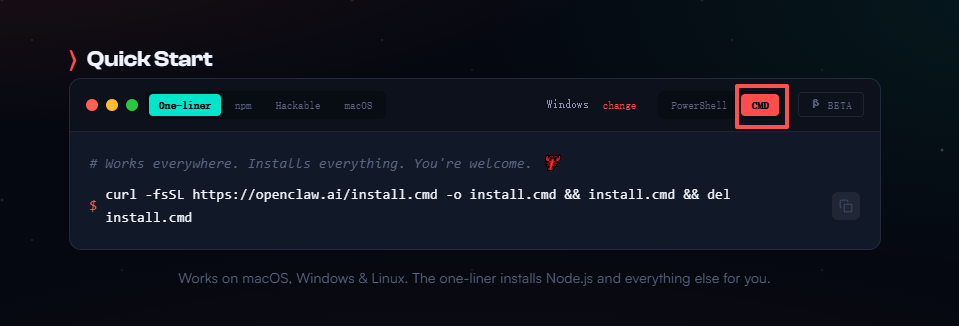
1 | |
如果首次安装，时间会很长，需要耐心等待。
成功之后会输出如下图片
第一个选项选择 yes, 就是询问你是否知道风险的，只有选择 yes 才能到下一步，如果选择 no 直接结束了
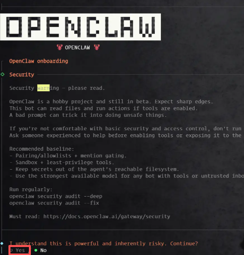
第二步选择 QuickStart
第三步选择模型服务商，这里选择 MiniMax或者和 Qwen，免费额度充足，适合入门使用
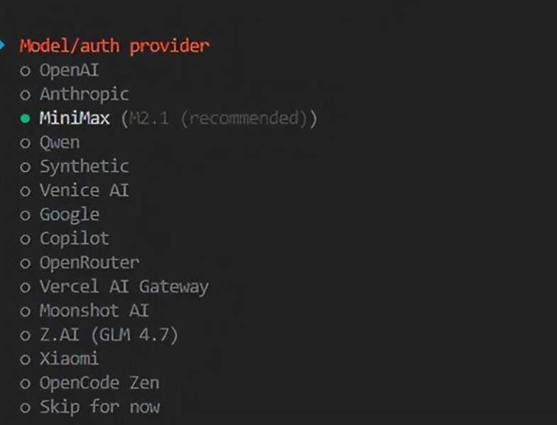
选择模型后，会提供一个链接，并自动在浏览器中打开，由于我已登录过，所以显示账户信息，直接授权即可；如果尚未登录，按照提示完成登录即可
第四步然后会出现选择聊天工具的选项，默认集成的都是国外的平台，这里先直接跳过，后面再通过插件的方式接入 飞书
Skill 和 Hooks 也先跳过，暂时先不配置：
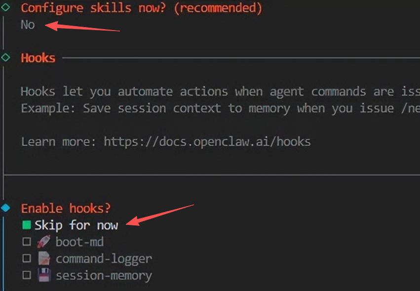
然后选择的 Web Ui 打开：
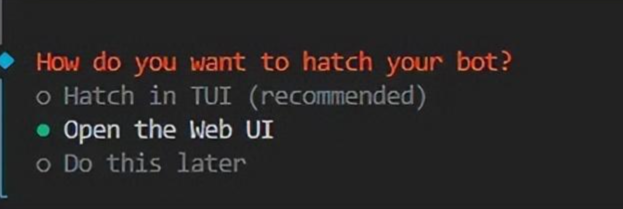
随后会在浏览器打开 http://127.0.0.1:18789
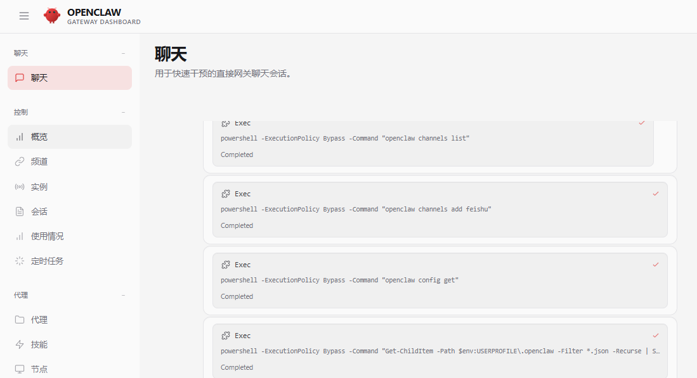
ClawBot如何接入飞书
为了可以随时随地使用 ClawdBot ，我们需要接入 IM 通信软件。国内的话可以考虑接入飞书，因为它生态相对开放，接入起来会比较方便，同时支持PC电脑端和手机移动端。
1. 创建飞书应用
打开 飞书开放平台，创建新的应用, 名字就叫 “ClawdBot”
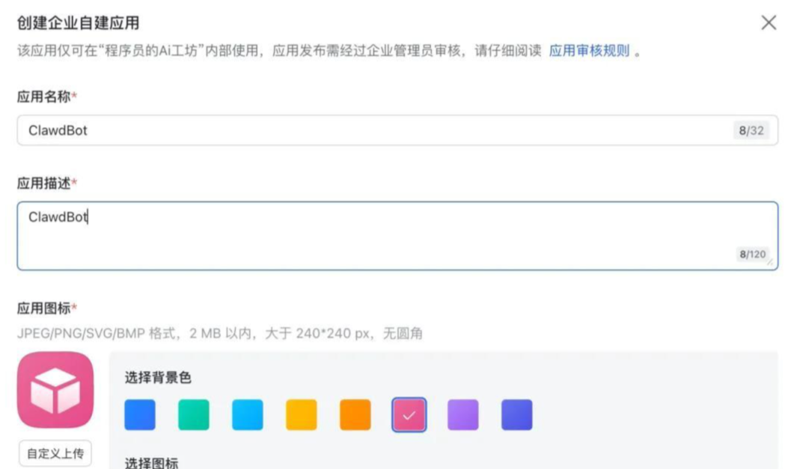
创建完成后查看App ID 和 App Secret
2. ClawdBot 安装飞书插件
ClawdBot 飞书插件的地址如下 https://github.com/m1heng/clawdbot-feishu.git
按照插件的说明文档，执行下方命令即可安装
也可以让 openclaw 给你安装 飞书的插件 然后吧 App ID 和 App Secret 给配置好
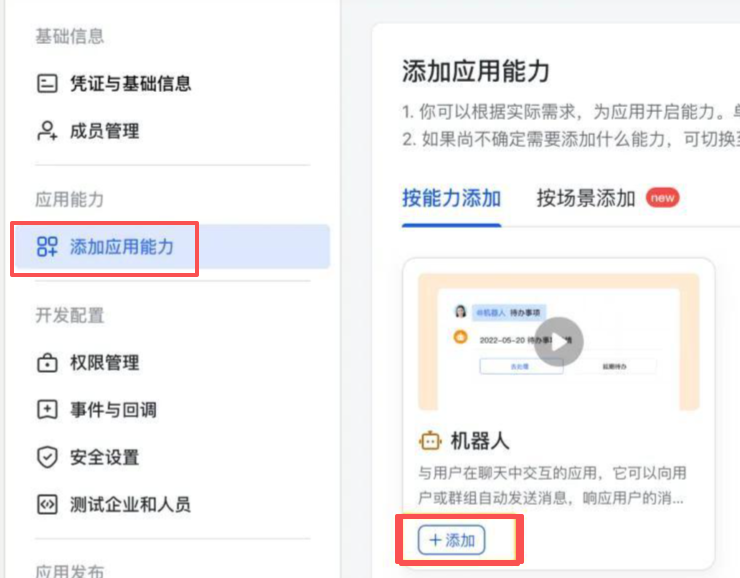 > 开通权限 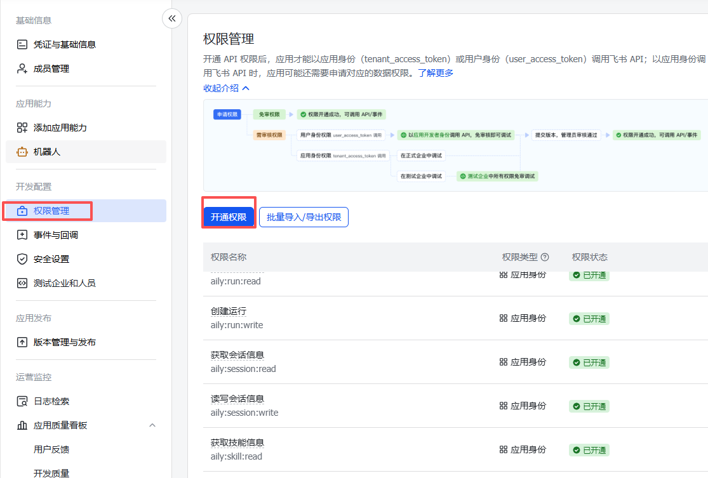添加机器人
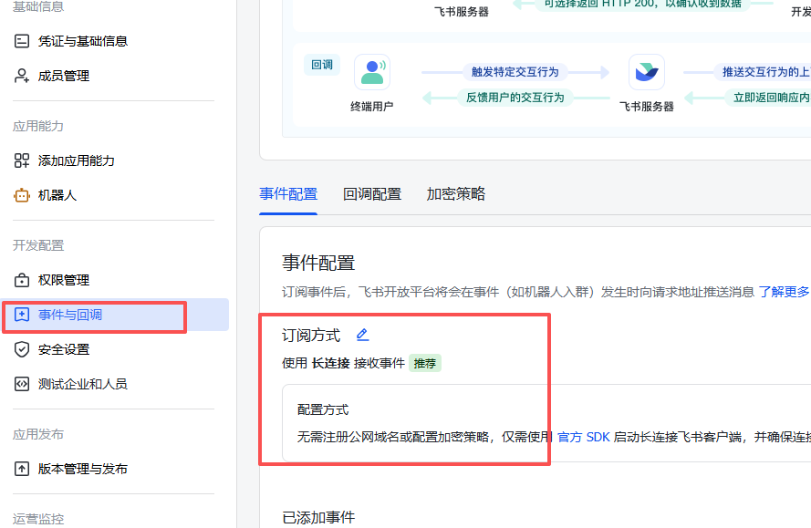阅相关事件
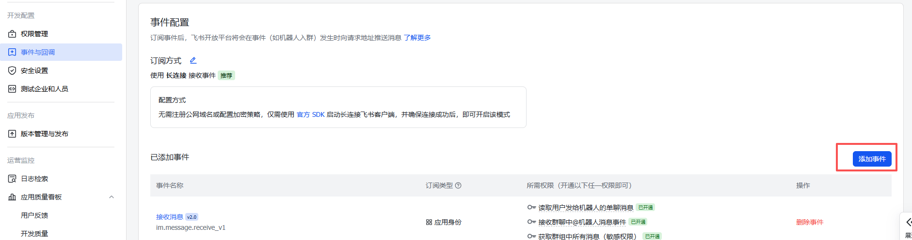订阅方式选默认推荐的长连接，添加上以下事件
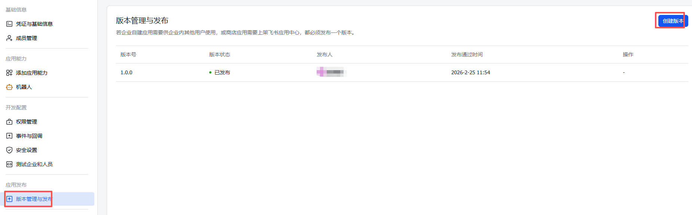 > 等待审核通过之后，打开你的飞书->搜索开发者小助手->找到刚建成的机器人，打开应用，即可对话~ 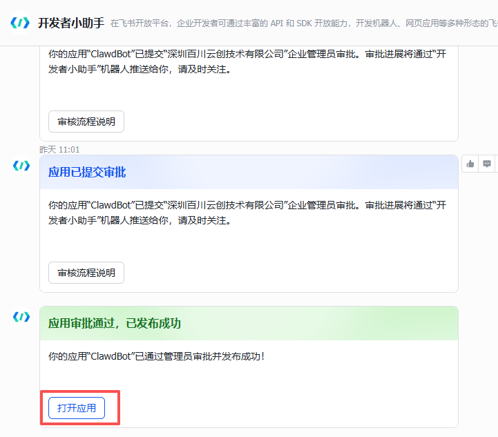 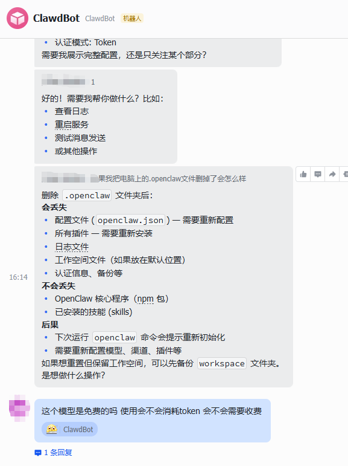编辑完之后创建版本并发布
openclaw的常用命令
1 | |